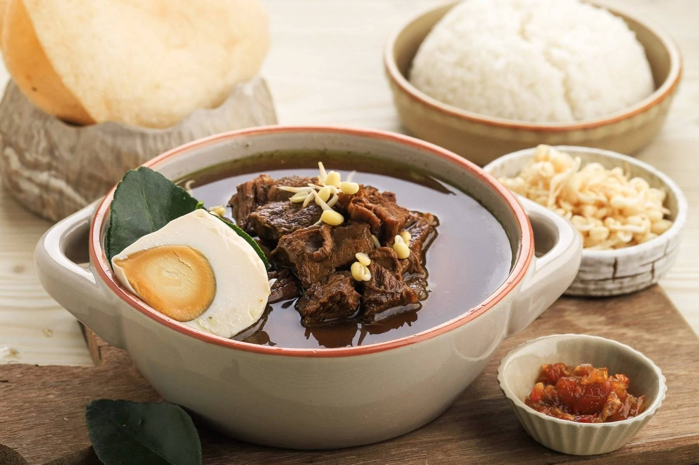

Rawon

Rawon is a popular Indonesian beef soup that originated from Surabaya, East Java. Traditionally, rawon is characterized by its black color, which comes from one of its main ingredients: black keluak nut. In this recipe, the use of keluak is what brings out Rawon’s dark color and nutty flavor!
Nowadays, you can find several variations of Nasi Rawon all over Indonesia. For example, Balinese Rawon omits the use of keluak, which makes its soup a brown color rather than black. But the most popular version is still the traditional East Java version (which is the version we’ll make in this recipe).
Ingredients
Main ingredients
- 1 pound beef shank, cubed
- 2 tbsp oil
- 6 ½ cups water
- 1 tbsp salt
- ¼ tsp black pepper
- 6 kaffir lime leaves
- 1 tsp lemongrass paste
- 1 stalk green onions , chopped
- 2 ½ tsp sugar
- 1 tsp tamarind paste, diluted in 1 tbsp water
Rawon Spice Mix
- 7 shallots, minced
- 3 cloves garlic, minced
- 5 keluak , steeped in hot water
- ½ inch fresh turmeric, sub 1/4 tsp ground turmeric
- 4 candlenuts, roughly chopped
Nasi Rawon Toppings
- steamed rice
- sambal terasi or sambal oelek (red chili paste)
- shrimp crackers
- bean sprouts
- boiled eggs
- fried onions
How To Make:
- Into a large pot, heat oil on medium-high heat.
- Once oil is hot, add in the rawon spice mix, lime leaves, and lemongrass paste. Stir until mixture is fragrant.
- Add in beef shank and toss it in the spice mixture until well-combined. Continue to cook until beef is seared.
- Add in water, salt, pepper, tamarind paste, and granulated sugar. Turn down the heat to low-heat, and let simmer until the soup boils and meat is tender, about 1 hour.
- Turn off the heat, then stir in chopped green onions.
- Serve rawon over steamed rice, then garnish with your desired toppings. ENJOY!
Back to recipe list